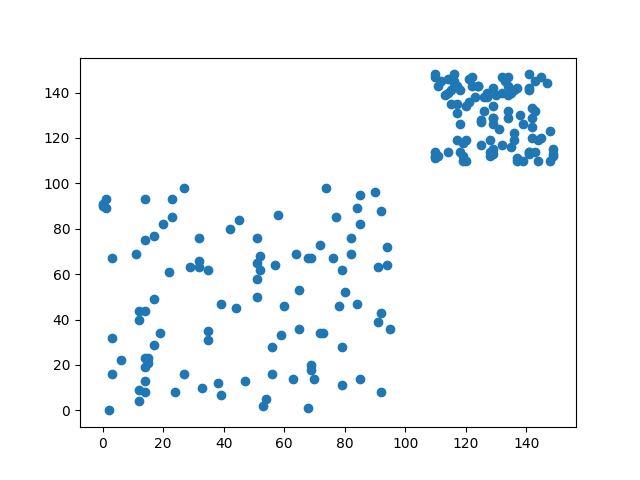
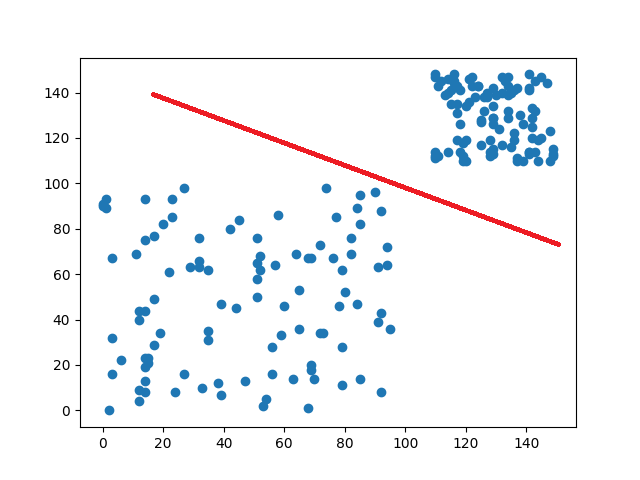
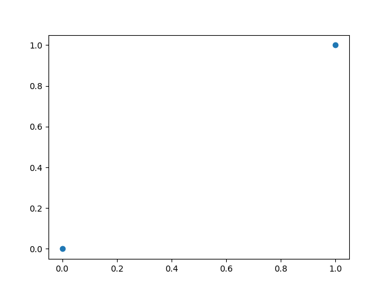
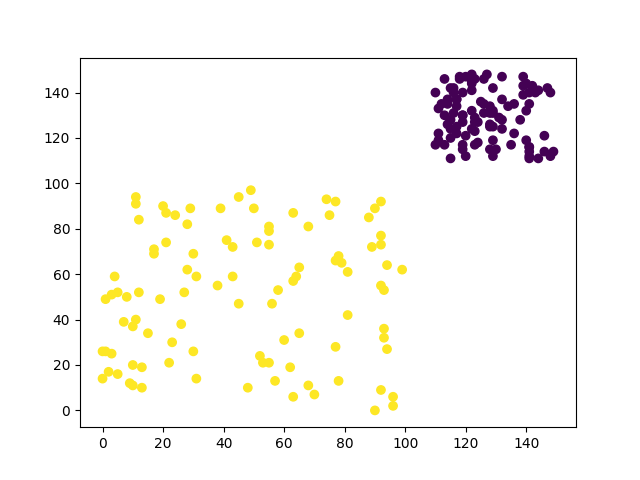
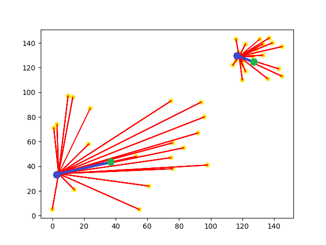
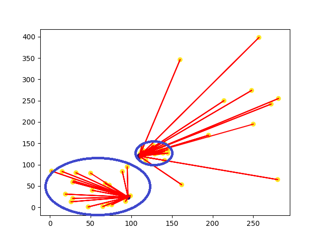
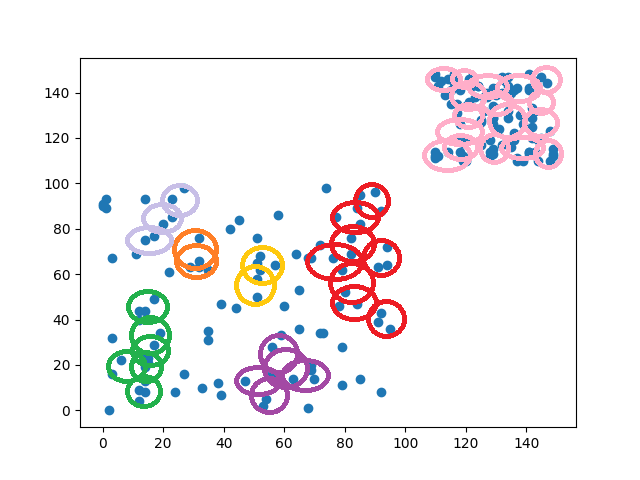

【day21】分群?分類?傻傻分不清楚-分群演算法介紹
發布日期: 2022-09-25 21:40:26
原文連結: https://ithelp.ithome.com.tw/articles/10298327
何謂分群(Clustering)?何謂分類(Classification)
我們在看一些AI文章時，可能會看到分群(Clustering)或分類(Classification)這兩個名詞，有些人會覺得這兩個名詞是相同的，但這樣子就大錯特錯了分群與分類是完全不一樣的技術，接下來我來說明一下兩者的差別。
分類(Classification)
假設我們有一筆數據投射在2維空間中長這一個樣子

如果叫你把這些數據分類，你會怎麼做呢?你可能會跟我一樣，直接在中間畫一條線，直接將數據分成兩類

那這樣做的根據是什麼呢?可能是中間很明顯有空白區域，也有可能是因為右上密度比左下還要高，不管是哪一種方式都是你使用你認為的規則來劃分這些數據。

最後數據的分布狀態，會因為我們所設立的規則，強制的將這些數據收斂到相對應的點當中。分類就像是一個硬幣分類機，將相同的面額放在一起(條件)，最後得到一個明確的結果
用一句話來說明分群就是，給予條件，去實現想要的結果。
分群(Clustering)
剛剛提到了分類，那分群是什麼呢?簡單來說就是使用演算法來計算數據框列出相似的的群體。在這些群體內因為是通過演算法分析，所以我們無法知道明確的結果，需要查看群體內的結果，才能去判別這個群體主題(Topic)。

讓我們回到剛剛的圖片，若是採用分群的做法我們的數據分布就可能會長這個樣子(不同顏色代表不同群)，我們能看見，分群並不會像是分類一樣會改變原始數據的分布狀態，而是通過演算法計算出這些數據該在哪群裡面。分群的結果也能代表著群內數據相似度較高，群外數據相似度較低
分群演算法
了解到分類與分群的差異後，來看看分群到底有哪一些常用的技術，這些技術又使用了那些方式來達成分群的效果。
K-means分群(K-means Clustering)
K-means是一種透過計算資料間的距離來作為分群的依據的演算法。K-means的演算法需要預設分群數量(k值)，通過設定的分群數量產生相對應的隨機中心點，藉由這些中心點向外延伸，找到靠近各中心點的數據點，最後計算出各點到中心點的距離平均，重新建立一個新的中心點，一直不斷的重複以上的動作，直到中心點不再變更後才會停止。這樣說可能概念上有點模糊，我們用圖片的方式來看看K-means分群是如何達成的。

圖片中可以看到各中心點(藍點)會根據距離，來找到距離最近的所有數據點(黃點)，並且計算數據點與各中心點之間的距離平均值，來重新移動中心點的位子，直到中心點不會在移動(綠點)。
K-means的作法在數據分布較乾淨時才能有較好的結果，若資料點較雜亂k-means就很難發揮其優點，我們看到以下例子。

我們可以看到最理想的分類方式，就是移除掉無意義的雜訊，並將藍圈處的資料點分成一群，但是k-means卻會找到所有的數據點，這代表若資料集當中有許多的雜訊，就會因為這些雜訊導致中心點移動到很遠的地方，分群效果自然會不佳，所以k-means無法對資料分布較大的數據分群，且容易受到雜訊影響。
DBSCAN(Density-based spatial clustering of applications with noise)
DBSCAN(Density-based spatial clustering of applications with noise)顧名思義，就是基於密度的分群方式，與K-means相比DBSCAN不需要設定聚類數量，而是通過資料之間的密度來進行分群，這種分群的方式會將特徵相似且密度高的樣本劃分為一群，並且找出密度較低的異常點，我們先來看看DBSCAN的分群方式。
DBSCAN的分群方式是先隨便找到一點數據點，並通過設定的半徑畫圓來查看圓內的資料點有多少，若符合所設定的最低數據量，圓圈就會繼續往前移動，反之重新找到下一個未掃描的資料，一直到掃描完所有的資料點才會停止，我們可以看到下圖DBSCAN的分群結果(同顏色為一群，沒被匡列到的資料點為異常點)。

從結果來看DBSCAN能幫助我們更詳細的找出相似的資料，但再圖片中卻可以發現一個問題，就是在密度較高的區塊(右上方)，有良好的分群效果，但在密度較低(左下方)的區塊，卻會被分類成較多群，這些密度較低群體之間可能也有一定的相似度，但DBSCAN卻會認為這幾組類別並不相同，這是因為DBSCAN若遇見密度差異大的資料集，就會導致效果會較差，這時只能去使用一些特徵分析的方式，將特徵較相似的群體合併在一起。
結論
從我們今天介紹了兩種分群演算法當中，可以發現到不同的分群演算法，能處理的資料集也都不相同，這就好比我們在深度學習中對圖片會使用CNN，對時間會使用LSTM，在分群演算法也是相同的道理，雖然不是不能做使用，但用錯方式得到的最終結果自然會不佳。